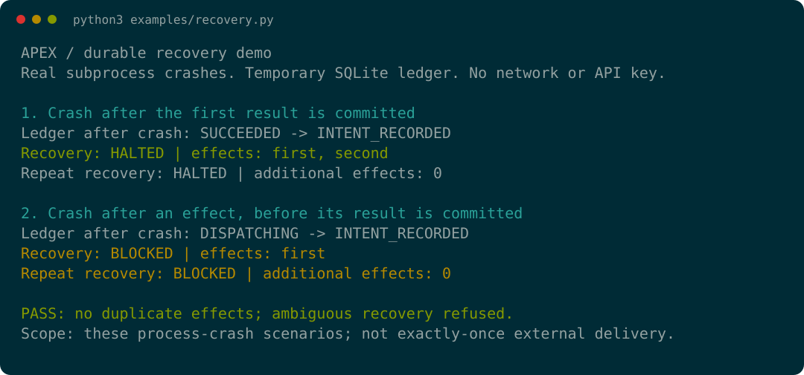
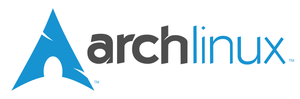

Prioritize
Resolve deadlines, dependencies, approvals, and constraints into eligible work.
Advanced SI systems for policy enforcement, reliable agents, persistent orchestration, execution runtimes, and retrieval.
AXIOM Director
A persistent control plane for priorities, delegation, and operational continuity across repositories and services.
Resolve deadlines, dependencies, approvals, and constraints into eligible work.
Route bounded assignments to capable executors while preserving scope and authority.
Inspect outcomes, govern continuation or recovery, and retain accepted evidence between sessions.
APEX
Committed effects are kept. Ambiguous outcomes halt the run.
Watch a process fail after a tool action but before its outcome reaches the SQLite ledger.
Python 3.11–3.12 · Linux/macOS · No API key

01 / Architecture
Three layers connect planning, dispatch, and stored knowledge.
01 / Policy
Checks proposed plans against caller-supplied policy.
02 / Runtime
Validates accepted tool sequences, records effects, and enforces configured limits.
03 / Context
Provides retrieval and storage through library and versioned HTTP interfaces.
02 / Portfolio
03 / From first principles
Model output is a proposal; typed contracts and explicit state transitions determine what may run.
Technical approach04 / Technology ecosystem
Core hardware and software in the AXIOM engineering environment.
Computing devices.
Displays.
Processors and graphics.

Operating system.
Mobile devices.
05 / Contact
Leave the engineering to AXIOM.